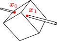

剛体に拘束条件を追加して、1点または2点を固定した場合の運動方程式を求めたい。
剛体に拘束条件を加える場合、固定点を基準にとるのがよい

拘束された剛体の運動を計算したい。例えば、剛体上の1点
𝒙0
を固定すれば、コマ（軸の先端が固定されている）のような運動になるし（右図左）、2点
𝒙0,𝒙1
を固定すれば、「その2点を通る軸」の周りの回転運動になる（同右）。これらは、前章で考えた自由な剛体に、拘束条件を追加したものになっている。
運動を計算するには、運動方程式を導出すればよい。導出の手順は、拘束条件が増える以外は、前章の自由な剛体の場合と同じである。
第10章で述べたように、剛体の位置・姿勢を決めるのは剛体上の任意の1点
𝒙0
と回転行列
𝑅
である。今の場合、
𝒙0
を固定しているので、回転運動だけが残ることになる。前章では基準点
𝒙0
として重心を採用したが、そうしたのは、作用・反作用の法則によって拘束力が打ち消し合い、重心運動が拘束力の影響を受けなくなるからであった。固定点がある場合、その固定点から受ける拘束力が残るので、重心を基準点にとる必要はない。
運動方程式が得られれば、解き方は、前章と同じである。この章では、1点を固定する場合と2点を固定する場合について、それぞれの節で議論を行う：12.11点を固定した剛体12.22点を固定した剛体なお、これらの拘束条件以外にも、滑り・転がりといった拘束条件もあり得る。これらについては、次の第13章で扱う。
12.11点を固定した剛体
剛体上の1点
𝒙0
を固定した場合（右図）、自由度が3つ減って、
𝒙0
周りの回転の自由度のみが残る。この節では、そのような場合の運動方程式(6)を導出する。また、外力として重力が働いている場合の数値計算を行う。
12.1.1運動方程式：式(6)
剛体上の1点
𝒙0
を固定した場合の運動方程式を導く手順は、前章と同じである：
1. 質点要素の速度˙𝑿を自由な速度𝝎で表現し、2. 運動方程式から拘束力𝑭cを消去した後、3. 慣性モーメントとトルクを用いた形に変形する。
以下、順に見ていこう。
1
˙𝑿
を
𝝎
で表す
第11章の【11.1-注1】で見たように、質点要素の速度
˙𝒙𝑖
は、剛体上の1点
𝒙0
の速度
˙𝒙0
、および、角速度
𝝎
を用いて以下のように書けるのだった：
˙𝑿≡⎡⎢
⎢⎣˙𝒙1˙𝒙2⋮⎤⎥
⎥⎦=⎡⎢
⎢⎣1−𝒙10×1−𝒙20×⋮⋮⎤⎥
⎥⎦⏟__⏟__⏟≡𝐴[˙𝒙0𝝎]⎡⎢
⎢⎣11⋮⎤⎥
⎥⎦⏟≡𝛀(1)
拘束がなければ
𝛀
が自由な速度になるが、今は
𝒙0
を固定点しているので
˙𝒙0=𝟎
となり、自由な速度は
𝝎
のみである：
˙𝑿=𝐵𝝎𝐵≡⎡⎢
⎢⎣−𝒙10×−𝒙20×⋮⎤⎥
⎥⎦(2)(3)
2運動方程式から
𝑭c
を消去する
拘束力
𝑭c
が満たす条件
˙𝑿T𝑭c=0
（ダランベールの原理）に、式(2)を代入すると
𝐵T𝑭c=0
となる。よって、質点要素に対する運動方程式：
𝑀¨𝑿=𝑭+𝑭c(4)
から拘束力
𝑭c
を消すには、両辺に
𝐵T
を左乗すればよい：
𝐵T𝑀¨𝑿=𝐵T𝑭
この式の
¨𝑿
に式(2)（の微分）を代入すれば、
𝝎
に関する運動方程式が得られる：
𝐵T𝑀𝑑𝑑𝑡(𝐵𝝎)=𝐵T𝑭(5)
3慣性モーメントとトルクを用いた形に変形する
後は、式(5)が綺麗になるように変形していけばよい。まず、今考えている運動は、「自由な剛体の運動」としても再現できることに着目する。実際、自由な剛体であったとしても、点
𝒙0
にある質点要素の質量が非常に大きく、初期速度が
˙𝒙0=𝟎
であれば、
𝒙0
は固定点のように振る舞う（重力以外の力を考えている）。この時、重心
𝒙g
は
𝒙0
に一致する。こう考えると、運動方程式(5)は、自由な剛体の運動方程式（の回転部分）において、基準点を
𝒙g
から
𝒙0
に置き換えたものになると予想できる：
𝑑𝑑𝑡(𝐼0𝝎)=𝝉0𝐼0≡∑𝑖𝑚𝑖(|𝒙𝑖0|2−𝒙𝑖0𝒙T𝑖0)𝝉0≡∑𝑖𝒙𝑖0×𝒇𝑖(6)
これが正しいことは、実際に計算を行うと分かる（以下の【12.1-注1】）。
𝐼0
は慣性モーメント、
𝝉0
はトルクであり、ともに
𝒙0
を基準点とする。
【12.1-注1】式(5)の各項の計算
式(5)の左辺の微分を括り出した時、各項は以下の赤字部分のようになる：
𝑑𝑑𝑡[𝐵T𝑀𝐵(𝑑𝑑𝑡𝐵)T⏟𝐼0𝝎𝐵T]−(𝑑𝑑𝑡𝐵)T𝑀(𝐵𝝎)⏟___⏟___⏟𝟎=𝐵T𝑭(𝑑𝑑𝑡𝐵)T⏟𝝉0
ただし、
𝐼0
は
𝒙0
に関する慣性モーメント、
𝝉0
は
𝒙0
に関するトルクである：
𝐼0≡∑𝑖𝑚𝑖(|𝒙𝑖0|2−𝒙T𝑖0𝒙T𝑖0)𝝉0≡∑𝑖𝒙𝑖0×𝒇𝑖
導出
左辺第1項：（式(3)で与えた
𝐵
を使う）
𝐵T𝑀𝐵=[𝒙10×𝒙20×⋯]⎡⎢
⎢⎣𝑚1𝑚2⋱⎤⎥
⎥⎦⎡⎢
⎢⎣−𝒙10×−𝒙20×⋮⎤⎥
⎥⎦=−∑𝑖𝑚𝑖(𝒙𝑖0×)2=∑𝑖𝑚𝑖(|𝒙𝑖0|2−𝒙T𝑖0𝒙T𝑖0)
左辺第2項：
(𝑑𝑑𝑡𝐵)T𝑀𝐵𝝎=[˙𝒙10×˙𝒙20×⋯]𝑀˙𝑿∣˙𝒙𝑖0=˙𝒙𝑖=[˙𝒙1×˙𝒙2×⋯]𝑀⎡⎢
⎢⎣˙𝒙1˙𝒙2⋮⎤⎥
⎥⎦=𝟎
右辺第1項：
𝐵T𝑭=[𝒙10×𝒙20×⋯]⎡⎢
⎢⎣𝒇1𝒇2⋮⎤⎥
⎥⎦=∑𝑖𝒙𝑖0×𝒇𝑖
12.1.2運動方程式(6)を1階の微分方程式にする：式(7)
求めたかった運動方程式(6)は、自由な剛体における回転部分の運動方程式と同じ形なので、解き方も同じである。即ち、式(6)を1階の微分方程式に変形したもの：
𝑑𝑑𝑡[𝑅𝐼0𝝎]=[𝝎×𝑅𝝉0](7)
を、数値的に解けば、剛体の運動
𝑅(𝑡)
が求まる。初期値としては、
𝑡=0
における赤字部分を与えればよい。ただし、剛体の固定点の座標が
𝒙0
となるように、剛体の初期配置を調節しておく。なお、慣性モーメント
𝐼0
は、重心に対するもの
𝐼g
が計算されていれば、以下の【12.1-注2】の式(8)から容易に求めることができる。
【12.1-注2】慣性モーメントとトルクの変換公式（平行軸の定理）
任意の点
𝒙0
の周りの慣性モーメントおよびトルクを、それぞれ
𝐼0,𝝉0
とおく。これらは、重心
𝒙g
に関する慣性モーメントおよびトルク
𝐼g,𝝉g
から、以下の公式により計算できる：（
𝒙0g=𝒙0−𝒙g
）
𝐼0=𝐼g+𝑚(|𝒙0g|2−𝒙0g𝒙T0g)𝝉0=𝝉g−𝒙0g×𝒇(8)
𝑚
は剛体の総質量、
𝒇
は外力の総和である。これを、（一般化された）平行軸の定理という。
導出
第1式：
𝐼0≡−∑𝑖𝑚𝑖(𝒙𝑖0×)2=−∑𝑖𝑚𝑖[(𝒙𝑖g−𝒙0g)×]2=−∑𝑖𝑚𝑖(𝒙𝑖g×)2−(𝒙𝑖gの1次の項)−∑𝑖𝑚𝑖(𝒙0g×)2∣
∣
∣
∣
∣(𝒙𝑖gの1次の項)は∑𝑖𝑚𝑖𝒙𝑖g=∑𝑖𝑚𝑖(𝒙𝑖−𝒙g)=𝑚(𝒙g−𝒙g)=𝟎より、消えることが分かる=𝐼g+0+𝑚(|𝒙0g|2−𝒙0g𝒙T0g)
第2式：
𝝉0≡∑𝑖𝒙𝑖0×𝒇𝑖=∑𝑖(𝒙𝑖g−𝒙0g)×𝒇𝑖=𝝉g−𝒙0g×𝒇◼
12.1.3【例題】重力下における、固定点を持つ剛体の運動方程式：式(10)
例題として、外力として重力が働いている場合を考える。まずトルクを求める。
𝑖
番目の質点要素に働く力は
𝒇𝑖=𝑚𝑖𝒈
なので、固定点
𝒙0
に関するトルク
𝝉0
は
𝝉0=∑𝒙𝑖0×𝑚𝑖𝒈=𝒙g0×𝑚𝒈(9)
となる。基準点が重心ではないので、前章のように
𝟎
にはならない。これは、重心に全ての重力がかかっている場合のトルクに等しい。
上式を運動方程式(6)に代入すると、解くべき方程式は以下のようになる：
𝑑𝑑𝑡(𝐼0𝝎)=𝒙g0×𝑚𝒈(10)
例として、剛体として三角錐の頂点に質量が集中しているようなものを考え、その頂点の1つを固定点として数値計算を行うと、右図のようになる。
12.22点を固定した剛体
剛体上の固定点として、
𝒙0
に加えて別の点
𝒙1
を考えると、剛体はこの2点を通る軸の周りを回転するようになる。この回転角だけが、この運動の自由度である、即ち、1変数の運動方程式になる。この節では、そのような拘束条件における運動方程式(15)を導く。この式は、回転角
𝜃
に対する運動方程式(16)に書き換えることができる。
12.2.1運動方程式：式(16)
固定点
𝒙1
を追加した場合、これまで自由な値を取ることができた角速度
𝝎
に拘束がかかることになる。実際、
˙𝒙1=𝟎
なのだから、式(2)より
𝒙10×𝝎=𝟎
である。この式は、
𝝎
と
𝒙10
が平行であるということを意味している。よって、
𝝎
は
𝝎=𝜔̂𝒙10(11)
の形で書ける。係数
𝜔
が自由な速度となる（
𝜔
はマイナスにもなる）。この
𝜔
を用いて質点要素の速度
˙𝑿
を表すには、式(2)に式(11)を代入すればよい：
˙𝑿=𝐶𝜔𝐶≡⎡⎢
⎢⎣−𝒙10×−𝒙20×⋮⎤⎥
⎥⎦̂𝒙10(12)(13)
これまでと同様に、運動方程式(4)
𝑀¨𝑿=𝑭+𝑭c
から拘束力
𝑭c
を消すには、
𝐶T
を運動方程式に左乗すれば良い：
𝐶T𝑀¨𝑿=𝐶T𝑭
後は、
¨𝑿
に式(12)を代入したもの
𝐶T𝑀𝑑𝑑𝑡(𝐶𝜔)=𝐶T𝑭(14)
を変形していけばよい。
実際に計算すると、以下のようになる：
˙𝜔=̂𝒙T10𝝉0̂𝒙T10𝐼0̂𝒙10(15)
ただし、
𝒙10=𝒙1−𝒙0
であり、
𝐼0,𝝉0
は式(6)のものと同じである。分母は、時間に依存しない定数である。
式(15)のまま解いても良いが、軸周りの運動なので、回転角
𝜃
に対する方程式にすることもできる。実際、
𝜔=˙𝜃
が成り立つので（以下の【12.2-注2】）、以下のようになる：
¨𝜃=̂𝒙T10𝝉0̂𝒙T10𝐼0̂𝒙10(16)
𝑡=0
における初期値
𝜃,˙𝜃
を与えれば、これを解くことで
𝜃(𝑡)
が求まる。ただし、回転角の基準点（
𝜃=0
がどの方向を向くか）を決め、拘束条件を満たすように剛体の初期配置を設定しておく必要がある（初期配置の下で分母を求めておく）。
【12.2-注1】式(14)の各項の計算
式(14)の左辺の微分を括り出した時、各項は以下の赤字部分のようになる：
𝑑𝑑𝑡[𝐶T𝑀𝐶(𝑑𝑑𝑡𝐵)T⏟̂𝒙T10𝐼0̂𝒙10𝝎𝐵T]−(𝑑𝑑𝑡𝐶)T𝑀(𝐶𝜔)⏟___⏟___⏟𝟎=𝐶T𝑭(𝑑𝑑𝑡𝐵)T⏟𝝉0
導出
左辺第1項。
𝐶
の定義(13)により
𝐶=𝐵̂𝒙10(17)
である（
𝐵
は式(3)）。これを使えば、
𝐼0
を括り出せる：
𝐶T𝑀𝐶=̂𝒙T10𝐵T𝑀𝐵⏟𝐼0̂𝒙10=̂𝒙T10𝐼0̂𝒙10
これが定数であることは以下のように分かる：
𝑑𝑑𝑡(̂𝒙T10𝐼0̂𝒙10)=̂𝒙T10(𝑑𝑑𝑡𝐼0)̂𝒙10=̂𝒙T10(𝝎×𝐼0−𝐼0𝝎×)̂𝒙10∵前章の【11.1-注3】=0∵式(11)
左辺第2項は、【12.1-注1】と同様にゼロである：
(𝑑𝑑𝑡𝐶)T𝑀(𝐶𝜔)=𝟎
右辺第1項。式(17)を代入すればよい：
𝐶T𝑭=̂𝒙T10𝐵T𝑭⏟𝝉0=̂𝒙T10𝝉0◼
【12.2-注2】角運動量の係数 𝜔 と回転角 𝜃 の関係
角運動量の係数
𝜔
と回転角
𝜃
の微分は等しい：
𝜔=˙𝜃
ただし、
𝜃
のプラス方向は、
̂𝒙10
の周りの右ねじ回転方向とする。
導出
まず、
̂𝒙10
軸周りに角度
𝜃
だけ右ねじ回転させる回転行列
𝑅(𝜃)
は、ロドリゲスの回転公式により以下のように書けるのであった：（第10章の【10.2-注1】）
𝑅(𝜃)=̂𝒙10̂𝒙T10+cos𝜃⋅(1−̂𝒙10̂𝒙T10)+sin𝜃⋅̂𝒙10×(18)
この
𝑅
とその微分：
˙𝑅=𝑑𝑅𝑑𝜃˙𝜃=[0−sin𝜃⋅(1−̂𝒙10̂𝒙T10)+cos𝜃⋅̂𝒙10×]˙𝜃=[𝑅(𝜃+𝜋2)−̂𝒙10̂𝒙T10]˙𝜃
を、角速度の定義式
𝝎×≡˙𝑅𝑅T
の右辺に代入すれば、
𝝎
と
𝜃
の関係式になる：
𝝎×=˙𝑅⋅𝑅T=[𝑅(𝜃+𝜋2)−̂𝒙10̂𝒙T10]˙𝜃⋅𝑅(−𝜃)∣
∣
∣
∣
∣𝑅(𝜃+𝜋2)𝑅(−𝜃)=𝑅(𝜋2)=̂𝒙10̂𝒙T10+̂𝒙10×̂𝒙10̂𝒙T10𝑅(−𝜃)=̂𝒙10̂𝒙T10=˙𝜃̂𝒙10×
これと、
𝜔
の定義式
𝝎=𝜔̂𝒙10
（式(11)）と見比べれば与式が得られる。
◼
12.2.2【例題】重力下における、固定軸を持つ剛体の運動方程式：式(21)
例題として、固定軸を持つ剛体の、重力下での運動を考える。トルク
𝝉0
は、式(9)と同じである：
𝝉0=𝒙g0×𝑚𝒈
よって、運動方程式(16)は以下のようになる：
¨𝜃=̂𝒙T10𝒙g0×𝑚𝒈̂𝒙T10𝐼0̂𝒙10(19)
右辺において定数でないのは、
𝒙g0
だけである。分母は定数なので、
𝑡=0
における値を計算しておくだけでよい。
この
𝒙g0
を回転角
𝜃
で表したい。そのために、モデル位置（
𝜃=0
）として、重心が最も下がった時の位置をとることにしよう。モデル位置での
𝒙g0
を
̃𝒙g0
とおくと、任意の時刻での
𝒙g0(𝑡)
は、回転行列
𝑅
をかけることで得られる：
𝒙g0(𝑡)=𝑅(𝜃(𝑡))̃𝒙g0(20)
𝑅(𝜃)
は、式(18)で与えられる。回転軸が垂直（
̂𝒙10∥𝒈
）な場合、式(19)の右辺がゼロとなって重力の影響がなくなるので、モデル位置はどこにとってもよい。
後は運動方程式(19)に、上式(20)、(18)を代入して
𝒙g0,𝑅
を消すと、回転角
𝜃
に関する運動方程式が得られる（導出は以下の【12.2-注3】）：
¨𝜃=−𝑚𝒈T(1−̂𝒙10̂𝒙T10)̃𝒙g0̂𝒙T10𝐼0̂𝒙10sin𝜃(21)
赤字部分は定数なので、極座標表示の2次元振り子（第9章の9.2節）と同じ形になっている。
数値計算を行うと、右図のようになる。
【12.2-注3】運動方程式(19)の分子
運動方程式(19)の分子を変形して、回転角
𝜃
のみが未知数になるようにすると、以下のようになる
−𝑚𝒈T(1−̂𝒙10̂𝒙T10)̃𝒙g0sin𝜃(22)
導出
運動方程式(19)の分子に、式(20)、(18)を代入して変形していくと
̂𝒙T10𝒙g0×𝑚𝒈=𝑚𝒈T̂𝒙10×𝒙g0∣
∣
∣
∣
∣𝒙g0=[̂𝒙10̂𝒙T10+cos𝜃⋅(1−̂𝒙10̂𝒙T10)+sin𝜃⋅̂𝒙10×]̃𝒙g0̂𝒙10×̂𝒙10=𝟎𝒈T̂𝒙10×̃𝒙g0=0∵3つのベクトルは同一平面上にある=𝑚𝒈T̂𝒙10×̂𝒙10×̃𝒙g0sin𝜃∣̂𝒙10×̂𝒙10×=−(1−̂𝒙10̂𝒙T10)=式(22)
となる。
◼